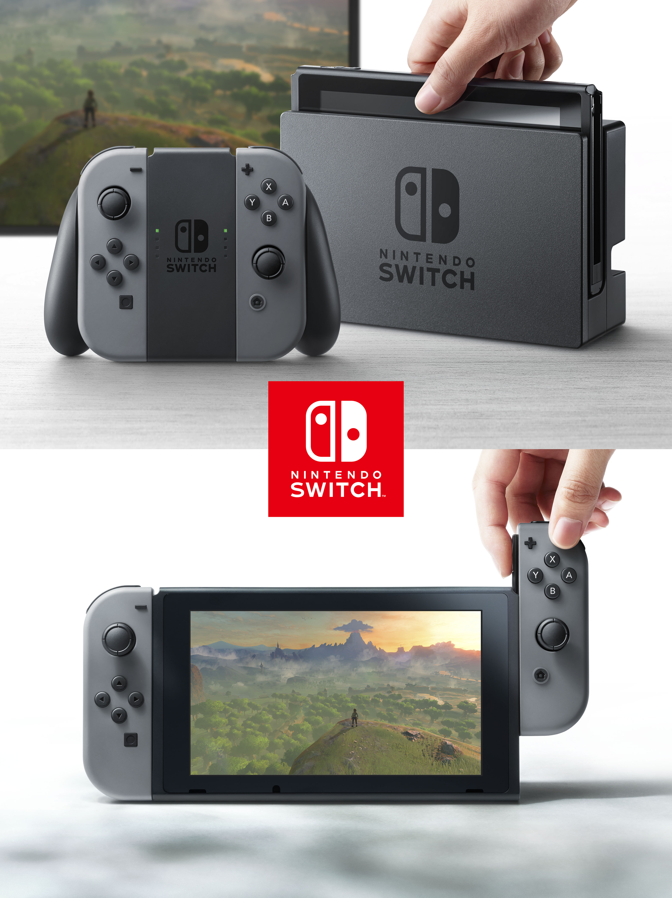

A Thank You Note
English
Since the Nintendo Switch presentation finally arrived, my mission here to entertain fans during this long wait is done.
I just want to say thank you to everyone who generated cards and told friends about this website!
Seeing that you guys really liked it and provided feedback gave me what I needed to keep this project
updated and going! I'm very glad to realize that thousands of people from around the globe came here!
You are the best! Have a great year! :D
Português
Já que a apresentação do Nintendo Switch finalmente chegou, minha missão aqui de entreter os fãs durante esta longa espera
está feita. Apenas gostaria de agradecer a todos que geraram cartelas e falaram para os amigos sobre este site!
Vendo que vocês realmente gostaram dele e deram seu retorno me deu o que foi preciso para contiuar este projeto
atualizado e andando! Estou muito contente de perceber que milhares de pessoas do mundo todo vieram aqui!
Vocês são os melhores! Tenham um grande ano! :D

News
- Jan 12nd, 2017: the Switch event is finally here! The bingo card generator is offline.
- Jan 2nd, 2017: the countdown to the Switch event is online!
- Nov 18th, 2016: six new options.
- Nov 10th, 2016: twelve new options. Navigation bar created.
- Oct 26th, 2016: two new options and one updated.
- Oct 22th, 2016: confirmed or disconfirmed options are now disabled.
- Oct 20th, 2016: Nintendo NX is now Nintendo Switch! Check out the first look trailer.
- Oct 14th, 2016: brazilian portuguese support and a bug fix.
- Oct 12th, 2016: three options updated and four added. "How to play" session created.
- Oct 10th, 2016: website opened!